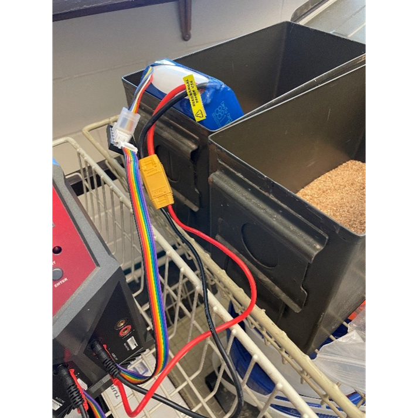
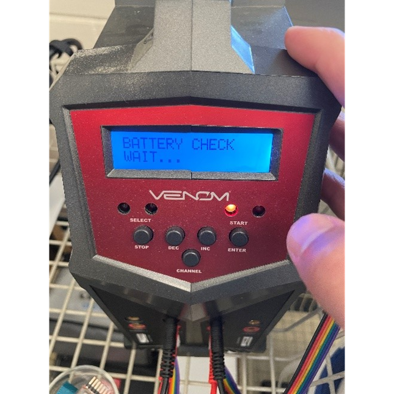

Rover Battery Charging SOP
Instructions
Rover & Battery
Charging Batteries
· The batteries are lithium polymer batteries (LiPo), which can be very dangerous if not properly charged, stored, or mishandled. May result in large and dangerous fires/explosions. If a fire occurs, it is a chemical fire which cannot be easily put out or contained.
The biggest warning signs for a potential fire:
o A hissing noise
o A very swollen battery
o Punctures of any sort
o Popping noises
· When charging/storing/using batteries, make sure there is a “Cold” fire extinguisher (regular fire extinguishers will not work) nearby along with the green metal ammo containers with sand in the bottom and buckets of sand.
o The two buckets have lids that are blue
o If any of the above listed issues occur, 1) quickly place the battery in one of the ammo containers or buckets, 2) dump the (sand) from the other container on top of the battery, and 3) put the lid on top to control the flames, but DO NOT CLOSE THE LID ALL THE WAY (this could turn the container into a bomb).
o PULL FIRE ALARM and/or CALL FIREDEPT IMEDIATLY. If safe to remove ammo can/bucket with the battery in it to outside the build do so.
o Evacuate the building but remain in the building area and look for first responders so you can tell them about the hazard.
o Report the incident to Jacob and Harper so they can file the EHS report.
o File any paperwork needed for incident
§ EHS link: https://ehs.missouri.edu/work/accident-reporting
· More to know about LiPo batteries
o https://rogershobbycenter.com/lipoguide
o https://vdr.one/everything-you-need-to-know-about-lipo-batteries/
o https://www.youtube.com/watch?v=ogb0DTqsZEs
o https://www.youtube.com/watch?v=eKLHD7_zzCE&t=0s
o What will happen if the LiPo explodes/catches on fire: https://msadowski.github.io/lipo-safety/#:~:text=If%20your%20battery%20starts%20making,unplug%20it%20from%20the%20charger.
Charging
·Each battery has 4 cells that are 20 aH (amp hour).
o https://learn.adafruit.com/all-about-batteries/power-capacity-and-power-capability
· The max charge for each battery is 16.8 Volts, which is 4.2 Volts per cell.
· The Venom charger can theoretically charge 4 batteries at once, but we typically only charge two batteries at a time.
·Each of the four cells in the battery needs to be charged and discharged in a balanced manner (e.g., one cell at 2 Volts and another at 4 Volts is dangerous).
· Each battery has two cords coming from it. The cord with the think red and black wires and the yellow XT90 end is the main power. The cord with five small wires of different colors is for cell voltage level monitoring. NEVER use or charge the battery without the monitoring cord connected to the charger or on of the small monitor units.
- Place the battery/batteries to be charged in the green metal ammo containers. They should stay in the containers at all times while being charged. Be careful not to get sand in or under the plastic covers on the batteries as this could result in rubbing and damage.

- If at any time during charging the batteries become hot to the touch, or start to hiss, swell, or make popping noises. As long as it is safe to do so,
Unplug the battery charger from the wall outlet!
Leave the battery in the Ammo container and dump sand from the white bucket over the battery.
Flip the Ammo container lid over the battery but DO NOT close the lid tightly as this could create a bomb.
PULL FIRE ALARM and/or CALL FIREDEPT IMEDIATLY. If safe to unplug XT90 battery from jumper and remove ammo can/bucket with the battery in it to outside the build do so. If not safe then leave it.
Evacuate the building but remain in the building area and look for first responders so you can tell them about the hazard.
f.Report the incident to Jacob and Harper so they can file the EHS report.
- Ensure that the sperate XT90 jumper line (not the line on the batter itself) is properly plugged into the Venom charger and that the “battery balance” adaptor is also plugged into the charger on the same charging channel as the XT90 jumper. VERY IMPORTANT: make sure the XT90 jumper cables are plugged in correctly (Red to Red, Black to Black). NEVER plug the yellow XT90 end into the battery without having the Red and Black jumper ends plugged into the charger! If the jumper is plugged into the battery and the Red and Black ends touch each other it could cause a fire!


4.Turn on the power for the charger; make sure the charger is plugged into an outlet.
Use the “CHANNEL” button to select which of the 4 channels you want to charge the battery on.
You want to use the “LiPo BALANCE” program. DO NOT USE the “LiPo CHARGE” program as this will not necessarily charge each cell in a balanced manor. Depending on what was previously selected you may have to use the Stop, Decrease, Increase, and Enter buttons to find the correct program.


- We want to charge with 7.0A, 14.8V, and (4S). If these parameters are not correct you can change them by pressing enter (short press, not long press and hold).

- Plug the battery/Batteries (Both the XT90 and the multicolored monitoring cable into the charger using the jumper lines from 2 above.

To charge the batteries, long press the start button. The charger will check that the battery is correctly detected and display both the number of cells. If the number of cells for “R:” and “S:” do not match then something is wrong and you need to recheck the battery connections and settings.
If both “R:” and “S:” read “4SER” then you can press short press the ENTER button to begin charging. (if you forget to press enter this second time, the batteries will not charge even if they are plugged in).
Once charging begins, DO NOT LEAVE THE ROOM (even for 30 seconds) UNLESS YOU TELL SOMEONE SO THEY CAN WATCH OVER THE BATTERIES
You can check the status of the batteries on the displayed screen. Pushing “INC” or “DEC” will take you to a second screen where you can see the status of each of the four cells in the battery.
After a long period of time, the charger may time out and you will need to restart it (press start button twice) if the battery is not all the way charged.
· The cells should always be within 0.1-0.2 of each other; if they are not, let someone know.
· The charger will get hot so keep it in cool area.